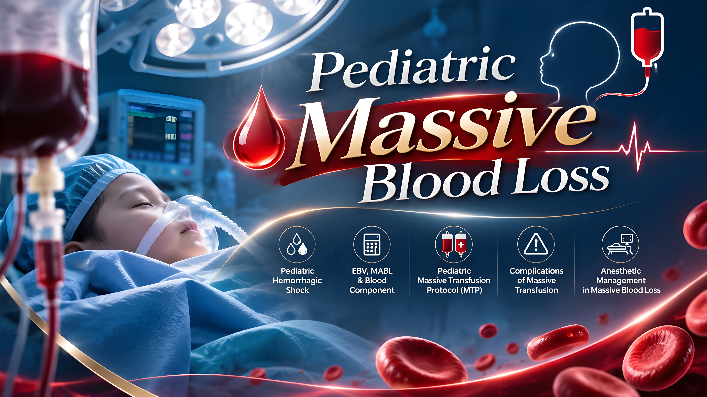
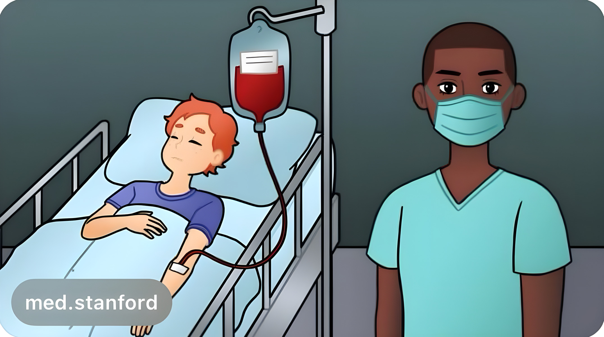
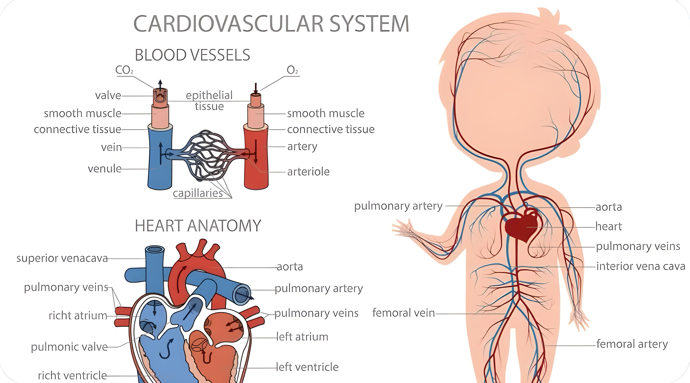
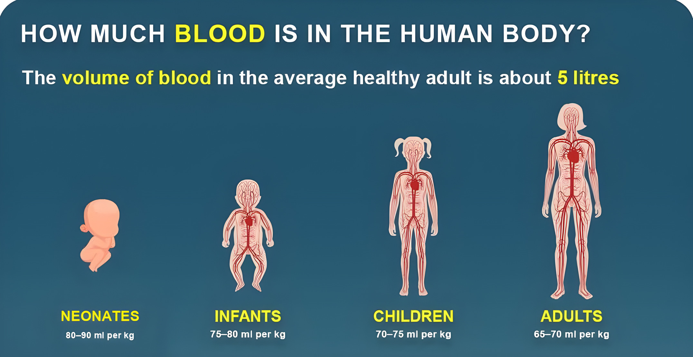
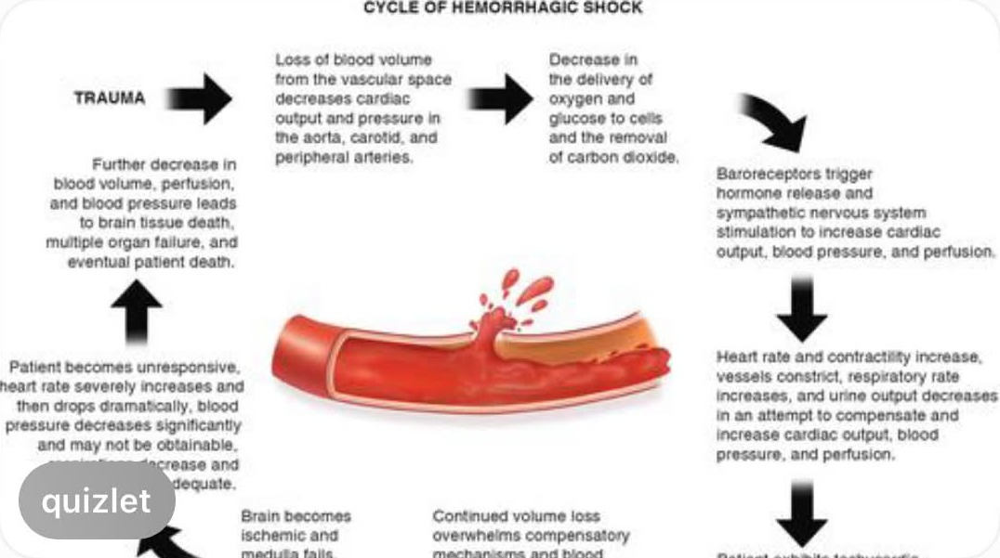
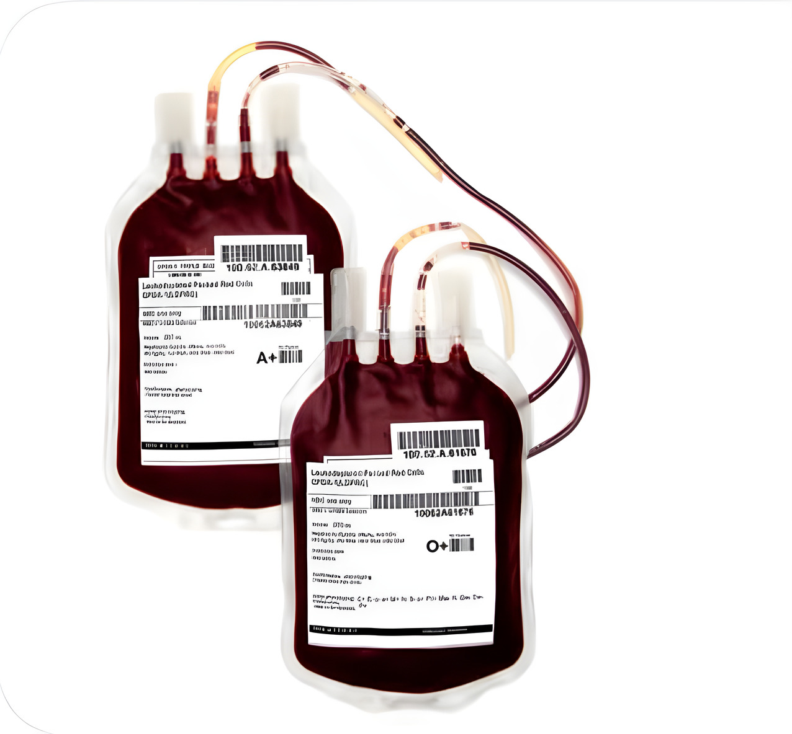
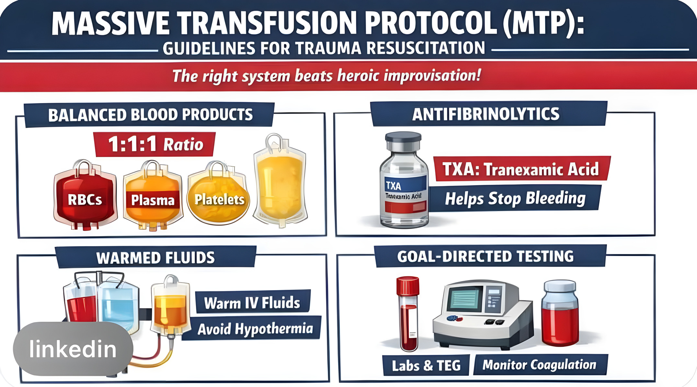
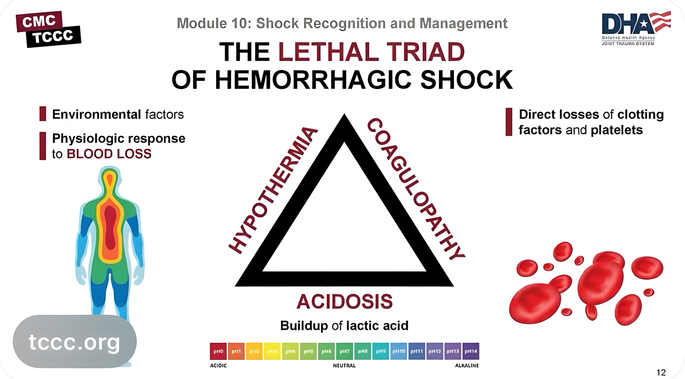
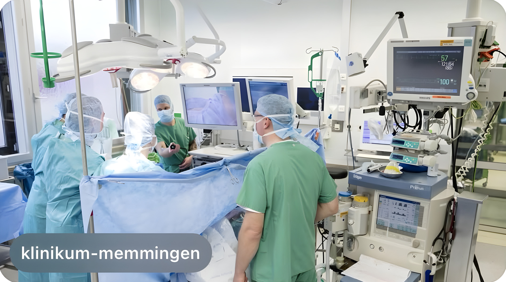

Pediatric physiology · Estimated Blood Volume


Pathophysiology · Clinical signs

EBV · MABL · PRC volume · Blood components

MTP · Lethal Diamond · Lab monitoring · Anesthetic management



Case simulation: เด็กเสียเลือดระหว่างผ่าตัด